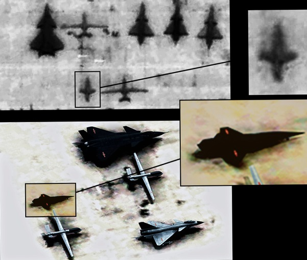
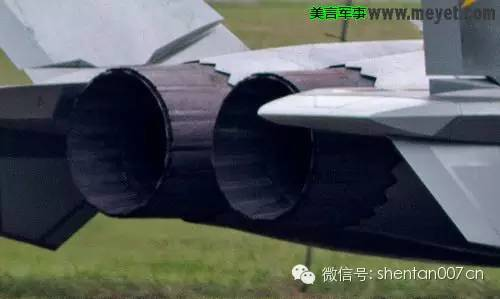

2015-09-29 21:23:00
九月的消息特別多，所以就不等到下一季，在這裡先做個總結。
九月3日的大閱兵展示了許多新武器，但是軍迷們應該都早已熟悉了。真正驚人的消息是DF-26也有反艦型，如此一來，區域拒止的邊界從離岸2000公里外推到4000公里，美國海軍的航母戰鬥群越發難以進入攻擊位置。而且DF-26的末端速度比DF-21D還高，機動的範圍也更大，標準3型導彈要攔截它也就更困難。在實戰上，DF-21D和DF-26的命中率都不可能是100%，但也不是0%；同樣的，標準3型的命中率也有很大的不確定性。所以從戰略上來看，問題是美國肯不肯讓一艘價值200億美元、載有6000名官兵的航母來冒這個險。如果賭輸了，不但艦隊泡湯，霸權也一夕化為烏有；如果賭贏了，則必然會受到強力的經濟反擊；只有做壁上觀可以漁翁得利。像這樣一來一往至少幾千億美元的賭注，美國人連自己的親爹都可以棄之不顧，好笑的是日本、菲律賓和台灣卻都自認比美國人的親爹還重要，這樣不知己、不知彼的玩家，天生就是炮灰的命。
綜合國外的衛星照相和大陸軍網上的洩密，可以確定大連造船廠是在二月就開始建造017號航母的船塢支撐架，三月開始組裝艦身，目前機庫已近完工，明年春可以下水。其他幾個重要新型艦隻的設計都已定稿，建造的時程也已確認：最快的是055級，已於年初開建，預訂2016年中第一艘將上船台總裝，首批建造4艘，可能追加4艘，足夠為2030年前的四個航母戰鬥群各配置兩艘；它們將是中共海軍遠洋打擊力量的防空主力，基本型的戰力已超過Burke III，改進型必然會更為可觀。下一個出現的將是054B，明年年底前開建，預計第一艘在2017年年底上船台，首批訂單是8艘，應該也是優先配備航母戰鬥群，成為中共遠洋海軍的反潛主力。據稱其動力系統採用較成熟的混合電力驅動，艦身也沒有大改，所以仍然只能攜帶一架反潛直升機。這聽來是可信的說法：中共海軍向來不會好高騖遠，寧可接受不是最先進的技術，也要避免延誤部署的風險；像是美軍福特號航母因為電磁彈射等新技術不成熟而屢次推遲服役時間的事，在今日的共軍是不可能出現的。此外我們可以預期2020年後，還將會有裝備了全電力驅動裝置的再下一代反潛護衛艦。
同一時段進行的還有002級航母的首艦018號，它將是共軍第一艘裝有彈射器的航空母艦。如同前面提到的054B一樣，中共海軍也選擇了成熟保險的蒸汽彈射技術，沒有硬上連美軍都還沒有實用化的電磁彈射。動力則是燒重油的蒸汽輪機；中共的蒸汽輪機技術還差美國半截，所以018號必須比美國的小鷹號小一點，以確保極速在30節以上。換句話說，它的滿載排水量將是七萬多噸，介於遼寧號與小鷹號之間。預計明年春在江南造船廠開建，2017年年底上船台，2019年年初下水。再下一個出現的會是四萬噸（也可能是三萬多噸）級全通甲板的兩棲攻擊艦；我原本猜測可能叫做073級，後來證實型號是075級。預計2017年開建，2018年上船台。至於伴隨航母戰鬥群的四萬噸級高速綜合補給艦，型號將是901級，建造時程應該不晚於075級。
在空軍方面，J-20的2016號原型機在九月11日首次露面，隨即開始試飛。與先前的2015號相比，它在氣動外形上完全沒有變動，顯然J-20在這方面的測試已基本完成；不過2016號進氣口的鼓包改用了透波材料，應該是新裝了某種電子設備。總體來看，J-20進度順利，在2017年按時列裝部隊沒有問題。日前有讀者詢問是否會在列裝前改用自產的太行引擎，這是因為成都飛機公司在九月22日展示了一架改裝太行引擎的J-10B，以致引起聯想。不過雖然J-10和J-20都是成飛的產品，目前都裝備AL-31引擎，太行的應用也日趨廣泛穩定，但是這兩型飛機有很大的差異：太行從J-10計劃一開始就是它的終極引擎，在J-20計劃裡卻完全沾不上邊。從俄製的AL-31改裝為太行，需要至少一年多的測試，這對早已成熟的J-10來說是有必要而無障礙的，對正在緊鑼密鼓做最終定型的J-20來說，則剛好相反，是無必要而有障礙的，所以我認為可能性極小。
在九月18日，中共八股文官洩了一架“高超音速飛行器”試飛成功。根據北京清華大學網友KKTT的分析（詳見http://liuqiankktt.blog.163.com/blog/static/121264211201581902333599/），基本與我一開始的猜測一致，亦即這是一架3+馬赫的飛行器，使用傳統的沖壓引擎。不過這方面是KKTT的專業，所以他還找到了很多其他的細節：這應該是由H-6攜帶發射的偵察用無人機，九月9日在鼎新基地試飛，由成飛設計建造。他甚至指出一張七月拍攝的衛星照片中，成飛機場上就有一架疑似高超音速無人機的飛行器。

這裡是鼎盛的一位網友根據KKTT指出的衛星照片所繪製的想像圖。我認為頗有可商榷之處：首先主翼的後掠角被這位網友誇大了，其次這架飛機沒有水平尾翼，所以應該用的是V型雙尾翼，而不是單垂直尾翼。此外他把主翼放得太靠後而尾翼太靠前，都是美觀而不實用的特徵。
本月公佈的無人機，還有彩虹5號。這是一架長航時、長航程的偵察兼打擊無人機，大於美軍的MQ-1C而小於MQ-9，用途應該與後兩者相似，適合反恐作戰，所以可能是以外銷為主著眼點而研發的。當然在台海戰爭中，在第一波打擊之後，也可以用來掃蕩殘存的國軍機動雷達、飛彈和其他重裝備。至於前面提到的高超音速無人機，則顯然是為突破美國海軍航母戰鬥群的防空網而設計的，將被用來輔助海洋偵察衛星為DF-21D和DF-26做目標定位。
另一個出人意料的新曝光裝備，是長程的PL-15空對空飛彈，由607所研製，幾天前一張由J-11B攜帶試飛的照片被美軍公佈。與PL-12D和PL-21不同，PL-15並沒有採用高效率、大航程的沖壓引擎，而用了中等航程、高機動性的Dual Pulse（雙脈衝）固體火箭引擎，性能指標基本與美軍剛開始部署的AIM-120D相當。我認為PL-21是為J-20量身設計來對美軍的預警機和加油機做遠程（～300公里?）襲擊用的，這些目標龐大而且無法機動躲避，適合沖壓引擎。而PL-15可能只有150-200公里的射程，但是有足夠的末端機動性來打擊戰鬥機；這類的小目標不太可能在200公里以上就偵測到，即使被偵測到也能高速脫離，所以超過200公里的飛彈射程並沒有什麼實用意義。
最後是幾件零星的新聞：上週長征-11號火箭試射成功，至此中共有了全系列的快速反應衛星發射能力，由當天可以發射的快舟火箭、隔天發射的長征-11號，以及一週內可發射的長征-6號組成。本月初中共正式展示了發展中的新重型直升機的模型，證實它採用了Mi-26的D-136引擎，但是機身和旋翼都將重新設計，預計性能與美軍開發中的CH-53K相當。一篇九月初發表的褒獎八股文，透露了共軍正在研發一型遠程的光電偵察設備，將裝備於下一代的預警機；目前沒有公開的性能指標，不過其尺寸和冷卻功率將遠大於戰鬥機用的設備，因此或許能把探測範圍延伸到100公里以上，這如同反艦彈道導彈和99式坦克用的主動防禦雷射一樣，都將是共軍的獨門絕活。
【後註】昨天寫稿的時候主要憑記憶寫，有些細節記錯了；剛剛翻出筆記，做了一些更正。最重要的是017號下水應該是2016年三或四月，而不是我原本寫的十二或一月。另外有讀者堅持J-20用的是WS-10太行引擎，還提供了幾張照片的鏈接。這些細節實在不是我喜歡著墨的重點，不過既然有人質疑，那麼就給個回覆吧。這裡是顯示最新的那架2016號尾部的一張：

分辨AL-31與WS-10有幾個特點可用：首先，AL-31的外襯片是雙層的，沒有縫隙，而WS-10是單層的，所以會有縫隙；這兩個引擎的外襯片之間顯然沒有縫隙。其次，AL-31的內襯片比WS-10露出的長度大三倍；這裡我們看不到內襯片的終點，顯然不是WS-10的短片設計。最後，AL-31的外襯片沒有明顯的鉚釘，WS-10的有四個鉚釘；這裡的外襯片顯然屬於AL-31。
{kind=link}